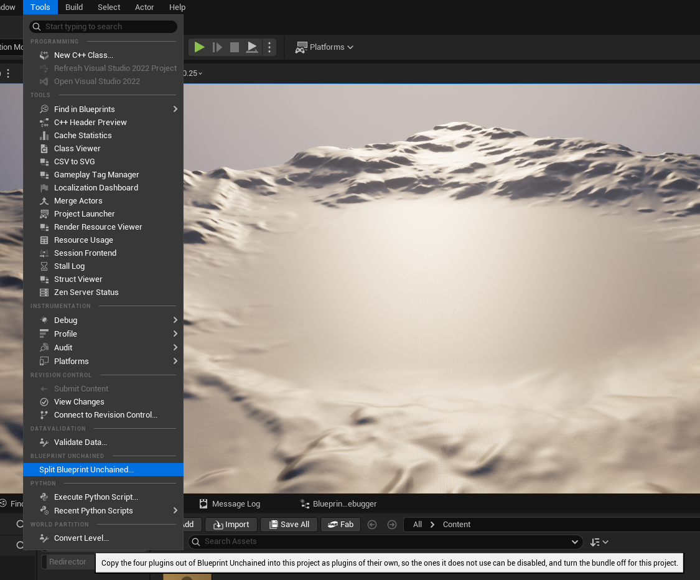
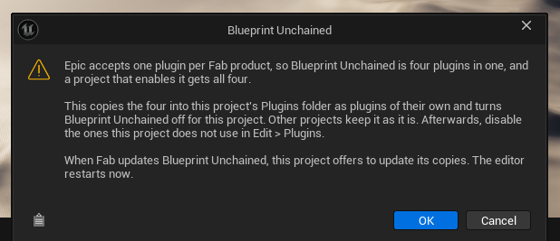
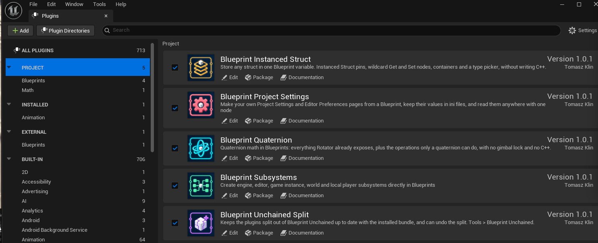
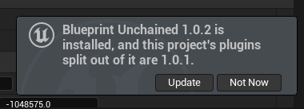
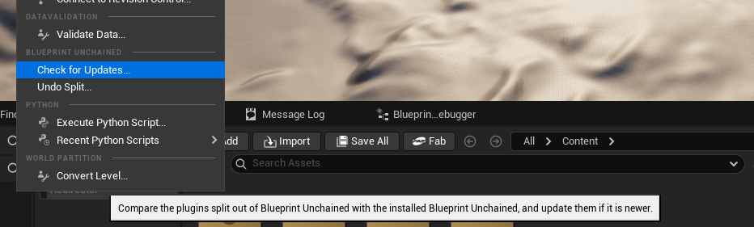

Blueprint Unchained gives you four tools for Blueprint:
The bundle contains the full version of each plugin. You can use each tool alone or together with the other tools. You do not need C++.
In a project that uses Blueprint Unchained, install only the bundle. The bundle contains all four plugins. If you also install a separate copy of a plugin, the project has two copies of the same modules and classes. Then the project can fail to open.
Each linked manual has setup steps, a node reference, examples and troubleshooting.
Fab sells one plugin for each product. Thus Blueprint Unchained is the four plugins in one plugin, and a project that enables it gets all four tools.
To keep only some of the tools in a project, split the bundle in that project. The split makes four separate plugins in the project. Then you disable the tools that the project does not use. Your other projects keep the full bundle.
Open the project. Then select Tools > Split Blueprint Unchained.

Read the message, then click OK. The editor does these steps:

Open Edit > Plugins. The four tools are separate plugins now. Blueprint Unchained Split is also in the list. This plugin keeps the four tools up to date.

For each tool that the project does not use, clear the Enabled check box. Then restart the editor.
Keep Blueprint Unchained Split enabled. If you disable it, the project does not tell you about updates.
If a Blueprint uses a tool that you disabled, the Blueprint does not compile. To use the tool again, enable it.
Fab updates Blueprint Unchained in the engine folder. Fab does not update the copies in your project. When a newer Blueprint Unchained is installed, the editor shows a notification when the project opens.

Click Update, then click OK. If you have changes that are not saved, the editor asks you to save them. Then the editor closes, replaces the copies and opens the project again. The tools that you disabled stay disabled.
To look for an update at a different time, select Tools > Check for Updates. The editor compares the version of the split plugins with the version of the installed Blueprint Unchained. If the installed version is newer, the editor asks you to update. If it is not newer, the editor tells you that the split plugins are up to date.

Select Tools > Undo Split, then click OK. The editor does these steps:
The project then has all four tools again.
The split plugins work only with the engine version that the project had at the time of the split. Before you open the project in a different engine version, do these steps:
If you already opened the project in the new engine version, do these steps:
BlueprintQuaternion, BlueprintSubsystems, BlueprintInstancedStruct, BlueprintProjectSettings and BlueprintUnchainedSplit.Use these 85 nodes to control rotations in your graphs. For example, you can turn a turret to a target, align an object with a surface, or make the rotation data from a tracked device smooth.
The nodes use quaternions. A quaternion is a 3D rotation that does not have gimbal lock. The nodes make, combine, compare and blend rotations. All angle pins use degrees. Each rotation operation normalizes its inputs. The library is thread-safe for Animation Blueprint updates (BlueprintThreadSafe).
In the Details panel, you can edit a quaternion value in three forms:
To disable this display, use Editor Preferences.
Read the Blueprint Quaternion manual.
Use a subsystem for data and logic that many Blueprints share. For example:
You can make these subsystems in Blueprint: Engine, Editor, Game Instance, World, Tickable World and Local Player. Unreal Engine makes and removes their instances. Use the Blueprint events to control what occurs when a subsystem starts, updates or stops.
The plugin finds your subsystem Blueprints. It also adds them to the packaged game. In Project Settings, you can set the folders that the plugin searches, or you can list the classes. Blueprint nodes also let you register classes and search for new classes while the game runs.
Read the Blueprint Subsystems manual.
Use an Instanced Struct when the entries need different types of data. For example, weapons and potions can use different structs and stay in one inventory array.
Each Instanced Struct value holds one struct. An array can hold values of different types. The nodes use the FInstancedStruct type of Unreal Engine, thus your current data stays compatible.
On the Get and Set nodes, you select the struct type. Other nodes let you do these tasks:
Structs that you make in Blueprint and in C++ both work.
Read the Blueprint Instanced Struct manual.
Make pages for project settings and for the preferences of editor tools. For example, keep a server address in Project Settings, or the grid size of a placement tool in Editor Preferences.
To make a page, do these steps:
To read the values in other Blueprints, use Get Settings.
The values are in standard ini files. You can select one of these storage types:
Use Save Settings, Reload Settings and Reset Settings To Defaults to manage the values.
Set a fixed Section Id to keep the saved values when you move or rename the Blueprint. The plugin finds settings Blueprints. It also adds them to the packaged game.
Read the Blueprint Project Settings manual.
The subsystem keeps the events when the level changes.
Make a World subsystem that receives rotation commands. Keep each command in an Instanced Struct. For example, one struct can hold a target quaternion, and a different struct can hold an axis and an angle.
Use quaternion nodes to apply the command. If you do not need a Rotator, keep the rotation as a quaternion between the operations.
Make a Local Player subsystem. Keep the tracking calibration of each player in it. Use quaternion smoothing on the rotations from the devices. If the devices need different calibration data, keep the data of each device in an Instanced Struct.
The settings page saves the values to the ini file that you selected. With the default storage, the values are in DefaultGame.ini. Your team can examine the changes in source control.
You can develop on Windows, macOS and Linux. The runtime modules also support Android. Packaged games do not contain the Editor and UncookedOnly modules.
Blueprint Subsystems and Blueprint Project Settings add the Blueprints that they find to the packaged game. If you limit the search to some folders, make sure that the search settings are correct.
The packaged game gets only these Blueprints and the assets that they use. If your game opens a level only by its name, you must still list that level in the packaging settings. See A level opened by name is missing from a build.
The Quaternion and Instanced Struct tools add code only. They do not have assets that need more packaging rules. The bundle does not have an example project or Blueprint assets.
Examine the plugins that are installed for the project. If you use Blueprint Unchained, remove the separate copies of Blueprint Quaternion, Blueprint Subsystems, Blueprint Instanced Struct and Blueprint Project Settings. In each project, use the bundle or the separate plugins, not both.
Unreal Engine packages these maps and all the content that they use:
Open Level (by Name) gives the name of a level, but it does not reference the level. Thus the engine packages that level only if it is in the list.
If the list is empty, the engine packages all the project content. But it does this only when no plugin requests specific content. In Unreal Engine 5.6 to 5.8, the NNEDenoiser plugin is enabled by default, and it requests its own content. Thus most projects do not get all the content.
Blueprint Unchained adds your subsystem and settings Blueprints without such a request. Version 1.0.0 made a request. Thus in version 1.0.0, each project with such a Blueprint did not get all the content.
To package the level, do one of these steps:
Your game can also load other content only by name or path. For this content, add its folder to Additional Asset Directories to Cook. Or enable Cook everything in the project content directory (ignore list of maps below).
You can use one tool and not use the other tools. To remove the other tools from a project, split the bundle. Then disable the tools that you do not need. See Using only some of the tools in a project.
The Plugins folder of the project has a folder with the name of one of the tools. Delete this folder, or move it out of the project. Then split the bundle again.
You also bought this tool separately, and it is installed for this engine. Two copies of one plugin cannot load together. Uninstall the separate copy in the Epic Games Launcher. Then split the bundle again.
A different program used a file in the Plugins folder of the project when the editor closed, for example a file explorer window or a code editor. Thus the update or the undo could not move the folders, and the project stays as before. Close the other program. Then select the same item in the Tools menu again.
Open the manual of that tool and read its Troubleshooting section. When you report the problem, give the name of the tool, the Unreal Engine version and the plugin version.
For help, bug reports or feature requests, send an email to tomasz.klin+blueprintunchained@gmail.com.
Give your Unreal Engine version, the plugin version and the name of the tool that you use. This manual is for plugin version 1.0.1.